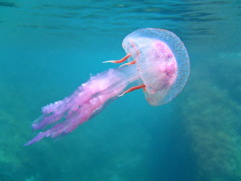

Ballena Azul
La ballena azul es el animal más grande que jamás haya existido en la Tierra. Vive en los océanos y se alimenta de pequeños organismos marinos, como el krill. Aunque es masiva, su alimentación se basa en pequeñas criaturas.

Curiosidades: La lengua de una ballena azul pesa tanto como un elefante adulto.
Tiburón Blanco
El tiburón blanco es uno de los depredadores más temidos del océano. Tiene una mordida poderosa capaz de romper huesos y capturar presas grandes como focas y delfines.

Curiosidades: Los tiburones blancos pueden detectar una gota de sangre en 100 litros de agua.
Medusa
Las medusas son criaturas marinas conocidas por sus tentáculos venenosos. Pueden nadar a través de las aguas en busca de presas, y algunas especies tienen la capacidad de regenerarse indefinidamente.

Curiosidades: Algunas medusas son bioluminiscentes y pueden emitir luz en la oscuridad.
Foca
Las focas son mamíferos marinos que se encuentran tanto en aguas frías como cálidas. Son excelentes nadadoras y pasan mucho tiempo en el agua, aunque también descansan en la tierra.

Curiosidades: Las focas pueden sumergirse hasta 300 metros de profundidad para cazar peces.